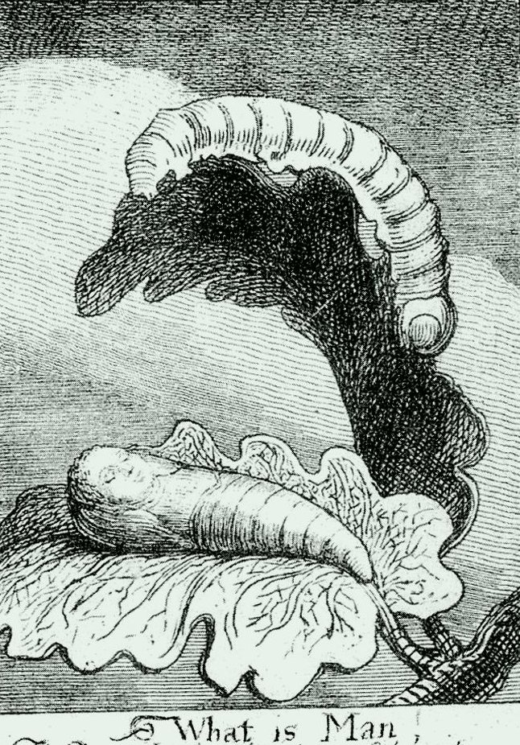
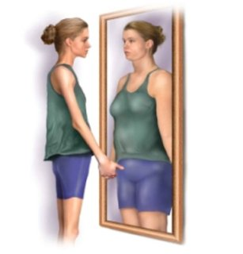
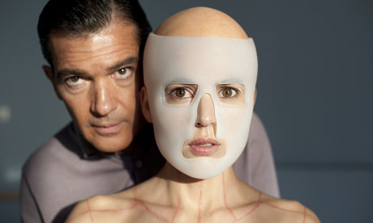

Zhuangzi, a follower of Daoism, once described his “Butterfly Dream” in a highly illustrative way, noting: “Once upon a time, I, Chuang Chou, dreamt I was a butterfly, fluttering hither and thither, to all intents and purposes a butterfly. I was conscious only of my happiness as a butterfly, unaware I was Chou. Soon I awaked, and there I was, veritably myself again. Now I do not know whether I was then a man dreaming I was a butterfly, or whether I am now a butterfly, dreaming I am a man. Between a man and a butterfly there is necessarily a distinction. The transition is called the transformation of material things” (The Book of Zhuangzi). What if we are all butterflies dreaming we are men in an age we have come to call postmodernism? What if our bodies transform every second of our existence; what if we are all re-born in a new historical period, and what if we still carry the same body—and the only things that make our bodies appear different are the changing garment and industrial-technological objects? Or perhaps not. What if our bodies really do transform from one type of butterfly to another; what if they become different in color, form, gender, shape, size, substance, weight, depending in which age our bodies proceed? But how do we position our bodily existence in an age we cannot even define properly? Are our bodies now confined to modernism or postmodernism? In their article “Mapping the Terrain”, Mairian Corker and Tom Shakespeare have outlined some of the prevalent opinions and theories that define modernity and postmodernity, but their primary focus is directed towards the ways in which postmodernist, and along with it, post-structuralist theories can influence our perception and approach to disability studies. Corker and Shakespeare point to the fact that we now live in the “age of uncertainty” (1) where we have come to negate the sacred, the meaning, the human, the existence of almost everything, and where the way we speak and think needs to be replaced with a “new language, new theories and new forms of practice” (1). While I do heed the idea that we live in the age of uncertainty, I also believe that, despite the age—whether we are talking about three thousand years ago, a hundred years ago, or now—humans have always lived in the age of uncertainty, simply because humans themselves are uncertain about everything and tend to question everything they experience. Moreover, every age had some ground-breaking changes, which considerably influenced the workings of our bodies and minds. I like to entertain the thought that we now live in what Steven Heighton calls “the Age of Clowns” (The Admen Move on Lhasa, 42), where we think of machines as more valuable and sacred than humans (more money is invested in the production of androids, cell phones and video games than in the development of safe drinking water systems for everyone in the world), where the real cannot be differentiated from what is fake (everything is a copy of the copy), where books are being replaced with virtual books that can be accessed only if you own a technological device, where people are infatuated with the superficial and trivial (more money is invested in curing baldness than curing cancer), and where communication has lost any meaning, simply because langauge became transformed into a “parroting language”, invaded by words such as “like”, “sort of/kind of”, “actually”, “i mean”, and so on—it is interesting how we have come to devalue silence and pauses in one another’s oral communication. Not only have we become the puppets of economic, political and social systems, but we have also evolved into clowns, and instead of trying to change the systems and preserve the human values, we simply joggle between the material, the fake, and the superficial, choosing one or the other, or everything combined. I find it interesting how Corker and Shakespeare define modernism or modernity through the Enlightenment and capitalism, in which “the individual is seen as the creative force of society and history” (2) and where everything is reduced to “the superiority of the West, the idea of science as Truth and the belief in social progress” (2). When it comes to disability studies, modernism has paved the way for individual and medical models of disability, which define disability as deviant and inferior to normal bodies, with normal bodies being defined through the functioning of certain cognitive and physical attributes. One of the challenges to modernism’s classification of disability was a social model of disability, or the idea that disability, rather than being a medical construct, is actually a social construct. When it comes to both modernism and postmodernism, not only are we classified by our age, gender, ethnicity or religion, but also by the the amount of money we have. In capitalist societies, having no money or small amount of money equals disability. At one point, Corker and Shakespeare engage in an interesting discussion about Baudrillard’s theory of representation and the ideology of disembodiment, which imply that postmodernism has completely disrupted our sense of identity an belonging, as well as that “social order is code-oriented, and power is conceptualized in terms of cybernetic control” (6). Thus, everything we experience is transitory—everything is what Baudrillard calls a mere “spectacle”, and like gender, “Baudrillard would view disability as a simulation, and would therefore refuse the fetishization of people with impairments” (6). This makes me think of the movie The Matrix, in particular the scene in which Keanu Reeves is offered a choice between the blue and the red pill. Reeves voices a typical postmodernist statement: “I don’t have a faith, because I do not like the idea that I have no control over my life.” Through this statement, Reeves confirms Plato’s idea that humans do not have control over their own bodies, and are therefore slaves of bodily fears and desires. The Matrix reflectes Baudrillard’s ideas at its best, representing human bodies as simulations that are manouvered by the people around us, as well as economic, medical, political, and religious institutions. The choice between the blue and the red pill can be seen as the choice between postmodernism and tradition, between denial and truth, between meaning and the lack/denial of meaning. If we are encapsulated in the global meta-narrative of the denial of truth and meaning, then how can we apply (if at all) typical postmodernist theories to our bodies, since with the denial of truth also comes the denial of bodies and their existence?
In her article “Critically Queer”, Judith Butler poses very interesting questions about the reclamation of the term queer in the LGBT communities, stating: “When and how does a term like queer become subject to an affirmative resignification for some when a term like nigger, despite some recent efforts at reclamation, appears capable of only reinscribing its pain? (223)… How is it that those who are abjected come to make their claim through and against the discourses that have sought their repudiation?” (224). How come that the term that once was derogatory and was associated solely with pathological conditions became a widely accepted word of pride and motivation among the LGBT people? But as much as the term queer may include members of LGBT communities, it also excludes those same members at the same time. The reason for this is that the term queer is being used for different reasons among the LGBT people. As Butler elaborates: “in some contexts, the term appeals to a younger generation who want to resist the more institutionalized and reformist politics sometimes signified by ‘lesbian and gay’; in some contexts, sometimes the same, it has marked a predominantly white movement that has not fully addressed the way in which queer plays—or fails to play—within non-white communities; and whereas in some instances it has mobilized a lesbian activism, in others the term represents a false unity of women and men” (Butler 228). Just as it is “necessary to lay claim to ‘queer,’ ‘gay,’ and ‘lesbian’ (simply because these terms lay their claim on us prior to our full knowing)" (Butler 229), it is also necessary for the disabled people born with a physical or cognitive disability to lay claim on terms such as “crip”, “handicapped”, etc, which ties back into the discussion on acceptable and non-acceptable terms for disabled people, which is what Simi Linton tackles in “Reassigning Meaning”.
I find Susan Bordo’s examination of eating disorders—anorexia and bulimia—particularly interesting, because she puts in a very feminist approach accompanied by a psychological perspective. I have always thought of anorexia and bulimia as disabilities; however, these are not physical disabilities per se. Anorexia and bulimia are perfect examples of how patriarchal and capitalist societies create ideals of beauty and perfection. But are these societies the only ones that are to be blamed for this? Is one of the illnesses of the modern age, predominant among women, really imposed by the patriarchy? Bordo refers to Susie Orbach’s argument that mothers whose daughters suffer from eating disorders are not to blame, “for they too are children of their culture, deeply anxious over their own appetites and appearance and aware of the fact—communicated in a multitude of ways throughout our culture—that their daughters’ ability to ‘catch a man’ will depend largely on physical appearance, and that satisfaction in the role of wife and mother will hinge on learning to feed others rather than the self—metaphorically and literally” (Bordo 47). An argument like this might have been partially correct in the 1980s, but not anymore. A lot of mothers are to be blamed—just look at the extremely popular American TV shows featuring five or six-year-old girls whose mothers are like “beauty pimps”, teaching their daughters everything about make up, sex, and swear words before even teaching them how to read or write. On top of everything, the girls’ bodies are transformed into very sexualized bodies, shaped by not what the girls want to eat but what their mothers tell them to eat. Now imagine what kind of eating problems and inferiority complexes these girls will have once they grow up. Another example is the TV show The Next Top Model, now popular in almost every Western country. Shows of this kind dictate the laws and norms of beauty and bodily perfection, and as a result, we may come to the point where being non-anorexic or non-bulimic will be looked upon as a pathological condition. One of the common disorders in people suffering from anorexia and bulimia is what doctors have termed as Body Image Distortion Syndrome (BIDS) or Body Dysmorphic Disorder in which the person fails to see the realistic image of their body. The latest medical research has proved that people with BIDS have problems in processing the visual input, and that a lot of them suffer from anxiety and depression.

